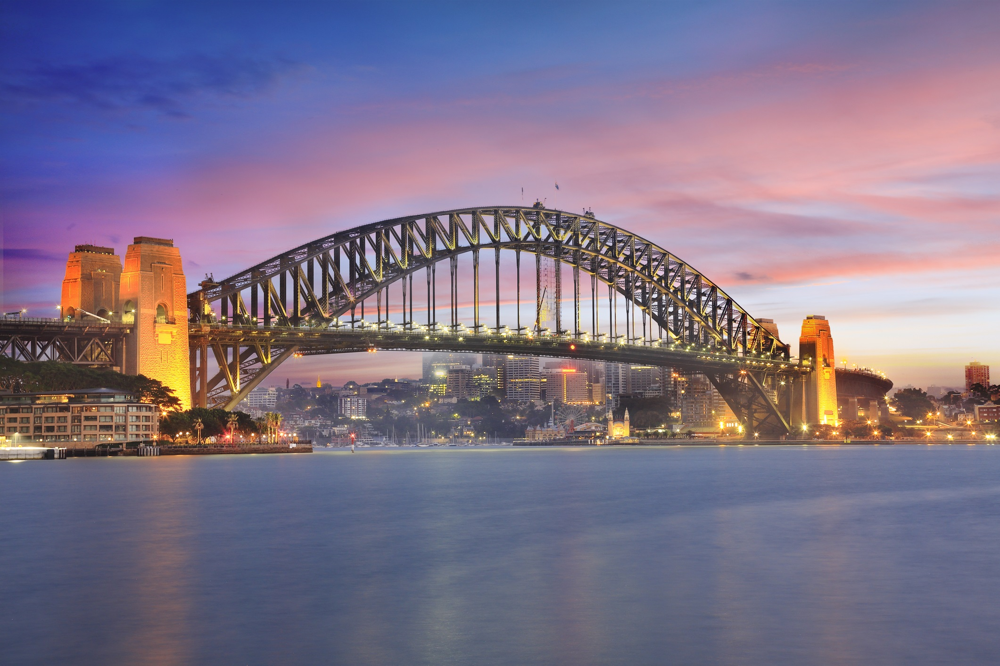
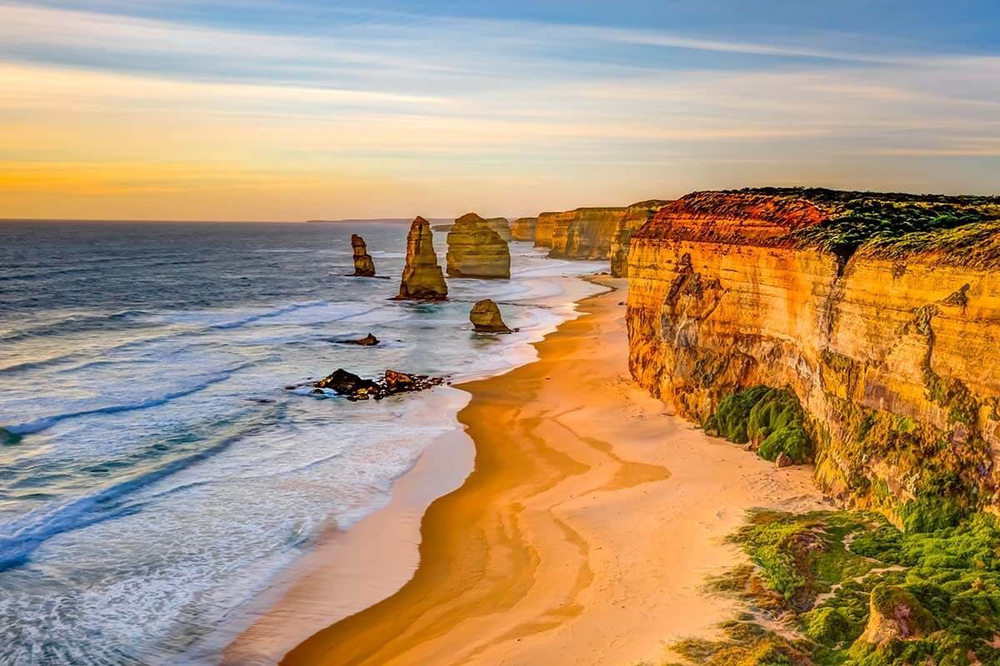
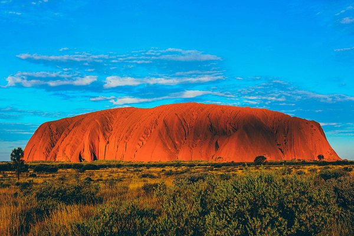

Australia stands prominently on my
list of travel aspirations, with the Sydney Opera House emerging as its foremost attraction, symbolizing the
country's cultural prowess and architectural marvel. The iconic sails of the Opera House against the
backdrop of Sydney Harbour encapsulate the allure of Australia's urban landscape. Imagining the prospect of
witnessing this world-renowned landmark in person fills me with anticipation and wonder. Beyond the Opera
House, Australia boasts a myriad of captivating destinations waiting to be explored. From the majestic
Sydney Harbour Bridge, offering panoramic views of the city skyline, to the breathtaking coastal drive along
The Great Ocean Road in Victoria, each location presents a unique facet of Australia's natural beauty and
cultural diversity
Moreover, the vast expanse of the
Red Centre in the Northern Territory beckons with its ancient landscapes and spiritual significance,
epitomized by the iconic Uluru. Australia's allure extends beyond its urban hubs, inviting travelers to
immerse themselves in the raw wilderness of the Outback and the pristine beauty of its coastal regions. The
country's rich indigenous heritage, celebrated through art, storytelling, and cultural festivals, adds depth
to the visitor's experience, offering insights into Australia's ancient past and vibrant present. Whether
marveling at the architectural wonders of Sydney, embarking on a road trip along the rugged coastline, or
witnessing the awe-inspiring natural wonders of the Outback, Australia promises an unforgettable journey
filled with adventure, discovery, and lasting memories. Australia's unique blend of natural beauty, cultural
heritage, and adventurous spirit captivates the imagination and leaves travelers eager to return for further
exploration.

Sydney Harbour Bridge

The Great Ocean Road, Victoria

Red Centre, Northern Territory